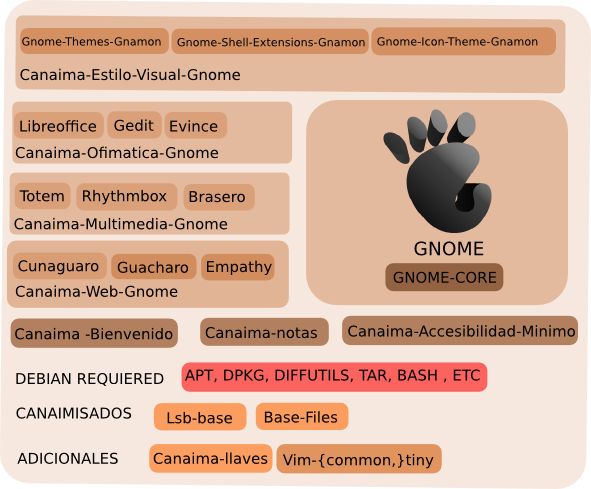

Canaima 4.0!!
Canaima 4.0 esta basada en debian (7) nombre codigo "wheezy" con las sigientes caracaterisiricas:
- Escritorio Gnome 3.4
- Kernel Linux 3.2.0
- Servidor de ventanas X.org 7.7
- Suite Ofimática LibreOffice 4.0.1
- Navegador Web Cunaguaro 22.0
- Cliente de Correo Guácharo 17.0.5
- Programa de manipulación de imágenes GIMP 2.8
- Editor de gráficos vectoriales Inkscape 0.48
- Lenguaje Python 2.7/3.2
- Lenguaje Perl 5.14

Paquetes Canaima 4.0
- Canaima-semilla
- Canaima-notas-gnome
- Canaima-plymouth
- Guacharo
- Cunaguaro
- Software-center
- Canaima-accesibilidad-gdm-gnome)
- Prometeo-abc
- Gnome-shell-extensions-gnamon
- Canaima-bienvenido-gnome
Origen de los paquetes según distribución

Que tiene hay de nuevo en 4.0
- Añadir soporte de internacionalización para las aplicaciones nativas y localización de 1 lenguaje adicional.
- Se Implemento un detector automático de hardware (Jockey)
- Se añadio soporte de accesibilidad al instalador de Canaima
- Rediseño de la aplicación Canaima-bienvenido basando en huayra-bullets .
Proyectos futuros
- Implementar una metodología de actualización de kernels
- Agregar la opción de seleccionar un entorno para tabletas en el instalador
- Agregar la opción de seleccionar un entorno para tabletas en el instalador
- Compilar los paquetes e imágenes ISO para arquitecturas armhf y armel.
- Estudiar la incorporación del repositorio backports en la sección aportes
Como Colaborar
- Rediseño de la aplicación Canaima-bienvenido basando en huayra-bullets de la distribución argentina Huayra Linux.